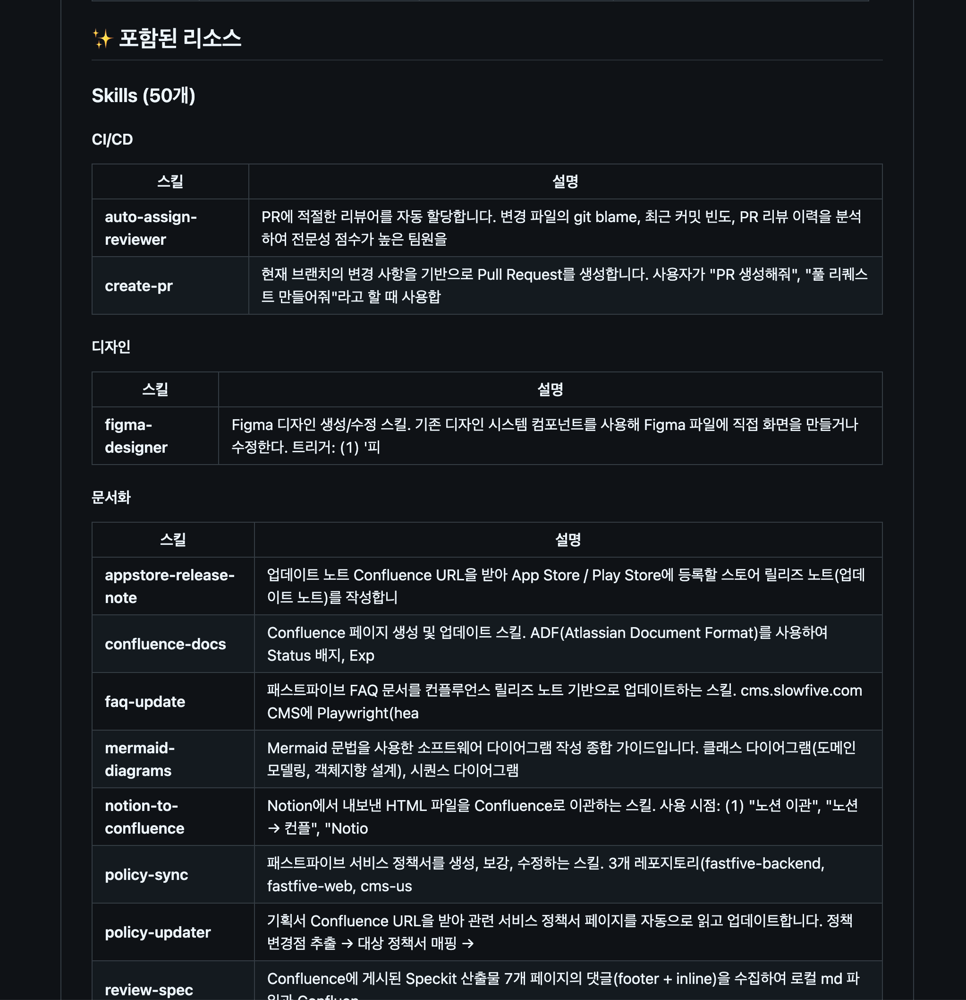

Career Case Study
사내 AI 공용 리소스 저장소 구축
여러 팀이 AI 코딩 에이전트를 활용하면서 중복 생성하던 skills, agents, commands, hooks를 공용 자산으로 관리·배포하기 위해 사내 AI 리소스 저장소를 구축했습니다.
AI ResourcesSkillsAgentsCommandsHooks
문제 정의
중복 리소스
팀마다 유사한 AI 도구를 각자 만들면서 유지보수 비용이 늘었습니다.
품질 기준 분산
프롬프트, 에이전트, 훅의 작성 방식과 검증 기준이 사람마다 달랐습니다.
전파 비용
좋은 리소스가 만들어져도 다른 팀이 쉽게 발견하고 재사용하기 어려웠습니다.
구현 구조
AI 활용에 필요한 공용 리소스를 저장소 단위로 관리하고, 팀별로 필요한 항목을 찾아 적용할 수 있게 구성했습니다. 리소스 유형을 분리해 검색성과 재사용성을 높이고, 품질 기준을 문서화해 사내 AI 도구 운영의 기준점을 만들었습니다.
스크린샷 갤러리
